flowchart TD A[Initialize SWS client] --> B[Select dataset group] B --> C[Load dataset] C --> D[Inspect dataset summary] D --> E[Select years] E --> F[Choose measured elements] F --> G[Apply dimension filters] G --> H[Choose aggregation mode by dimension] H --> I[Run aggregation] I --> J[Review output tables] I --> K[Review output graphs] I --> L[Run comparison] I --> M[Run outlier analysis] J --> N[Download CSV] L --> N M --> N
Fisheries Aggregation Shiny App
Functional and Methodological Documentation
1 Document purpose
This document provides functional, methodological and technical documentation for the Fisheries Aggregation Shiny App.
The application supports the exploration, filtering, hierarchical aggregation, visualization, comparison and outlier analysis of Fisheries datasets available through the FAO Statistical Working System, referred to throughout this document as SWS.
The document has four main objectives:
- Explain the application workflow from dataset loading to output download.
- Describe precisely how filters and aggregation modes affect the data.
- Document the methodological rules used to aggregate values and flags.
- Provide worked examples that can be used for testing and user training.
- Document the technical implementation of the application, including the structure of the R script, the location and organisation of the source-code repository, the trigger link used to launch the application, and the main information required for future maintenance and updates.
2 Application overview
2.1 Main objective
The application provides one common interface for processing multiple Fisheries datasets that share a broadly consistent data structure.
Users can:
- Select a current or disseminated dataset;
- Inspect the dataset structure and available measured elements;
- Restrict the data by year and measured element;
- Aggregate one or more hierarchical dimensions;
- Keep some dimensions at their original level;
- Preserve or aggregate observation flags;
- Aggregate multiple years into a single period;
- Review results separately by measured element;
- Visualize totals and compositions;
- Compare a current dataset with a disseminated or tagged dataset;
- Screen aggregated results for possible outliers;
- Download aggregated, comparison and outlier tables.
2.2 Conceptual workflow
2.3 Separation between filtering and aggregation
The application treats filtering and aggregation as two different operations.
Filtering determines which records remain in the working dataset.
Aggregation determines how those remaining records are grouped in the output.
For example:
- filtering species through the ISSCAAP hierarchy determines which raw species records are retained;
- aggregating those filtered records through the TAXONOMIC hierarchy determines how the retained species are grouped in the result.
The filtering hierarchy and aggregation hierarchy therefore do not need to be the same.
3 Application architecture
The user interface contains seven principal pages.
| Page | Name | Purpose |
|---|---|---|
| 1 | Data selection | Initialize the client and load a dataset |
| 2 | Dataset summary | Inspect metadata, measured elements, raw time series and source rows |
| 3 | Filters & aggregation | Select years, apply filters and configure aggregation |
| 4 | Dataset table | Review and download aggregation outputs |
| 5 | Graphs | Visualize totals and compositions |
| 6 | Comparison | Compare current output with disseminated or tagged data |
| 7 | Outlier analysis | Screen aggregated outputs for unusual levels or changes |
Data Selection page allows the user to connect to SWS by clicking the Initialise Client button, with no additional action required. The user can then select the Dataset group, with Current Fisheries dataset selected by default, and choose a dataset of interest from the supported Fisheries datasets.
Dataset Summary page provides an overview of the main characteristics of the loaded dataset, including the number of records and the available measured elements. It also includes graphical and tabular previews of the raw dataset over time.
Filters & Aggregation page allows the user to select the time period and measured element(s) of interest, apply filters to the available dataset dimensions, and define the desired aggregation settings.
Dataset Table page displays the aggregation results and allows them to be downloaded. If more than one measured element is selected, a separate output is provided for each measured element.
Graphs page allows the user to visualise the aggregation results using the available dataset dimensions and different graphical representations.
Comparison page allows the user to select a comparison data source and the corresponding disseminated or tagged dataset. It provides downloadable comparison outputs containing either all comparison rows or only those for which differences are detected.
Outlier Analysis page provides graphical tools for identifying and exploring potential outliers, including the distribution of values by year and the largest records according to each available dimension. In this application, outlier analysis is used as a screening tool to inspect unusually large values and year-on-year changes in the aggregated output. It does not apply a formal statistical outlier-detection rule.
4 Supported datasets
4.1 Dataset registry
The application supports the following datasets:
| Dataset_ID | Label | Group | Data_type | Production_source | Currency_flag |
|---|---|---|---|---|---|
| capture | Capture production | Current | Quantity | No | No |
| fi_capture_cecaf | CECAF regional capture production | Current | Quantity | No | No |
| fi_capture_gfcm | GFCM regional capture production | Current | Quantity | No | No |
| fi_capture_recofi | RECOFI regional capture production | Current | Quantity | No | No |
| fi_capture_seatl | SEATL regional capture production | Current | Quantity | No | No |
| aqua | Aquaculture production | Current | Quantity | Yes | Yes |
| fi_global_production | Global production | Current | Quantity | No | No |
| capture_price | Capture price | Current | Price | No | Yes |
| aquaculture_value | Aquaculture value | Current | Value | Yes | Yes |
| aqua_disseminated | Aquaculture production validated | Disseminated | Quantity | Yes | Yes |
| capture_disseminated | Capture production disseminated | Disseminated | Quantity | No | No |
4.2 Dataset groups
The data-selection page separates datasets into:
- Current Fisheries datasets
- Previous disseminated datasets
A current dataset may be used as the main dataset in the Comparison page.
A disseminated dataset may be filtered, aggregated, graphed and analysed for outliers, but it cannot currently be used as the main dataset in a comparison.
5 Dataset structure
5.1 Common columns
The application expects the following common Fisheries columns.
| Column | Meaning | Role |
|---|---|---|
| timePointYears | Reference year | Filter and optional temporal aggregation |
| Value | Numeric observation value | Value to aggregate |
| geographicAreaM49_fi | Country or geographical-area code | Filter and aggregation dimension |
| fisheriesAsfis | Species or ASFIS code | Filter and aggregation dimension |
| fisheriesCatchArea | Fishing-area code | Filter and aggregation dimension |
| measuredElement | Measured-element code | Filter and output separation |
| flagObservationStatus | Observation-status flag | Filter and optional aggregation grouping |
| flagMethod | Method flag | Flag aggregation |
5.2 Optional columns
Some datasets additionally contain:
fisheriesProductionSourceflagCurrency
The production-source dimension is available only when its dataset column exists.
The currency flag is used as a filter where available. It is also retained as an analytical key so values expressed in different currencies are not unintentionally merged.
6 Data loading and preprocessing
6.1 Client initialization and dataset loading
The user must initialize the SWS client before selecting and loading a dataset.
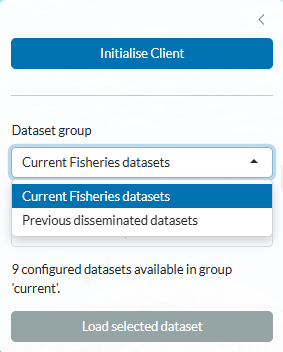
After loading a dataset, the application validates the expected common columns.
Loading stops when one or more required columns are absent.
This prevents later filtering or aggregation operations from silently using an incomplete structure.
6.2 Dataset summary
After a dataset is loaded, the application displays a summary of its main characteristics.
The summary includes:
- the selected dataset and dataset group;
- the number of records under the configured measured-element roots;
- the available year range;
- the number of configured measured-element roots;
- the configured measured-element roots;
- the number of configured roots with usable data;
- the configured roots with usable data;
- the main dimensions available in the dataset.
The summary is restricted to the measured-element roots configured for the loaded dataset in SWS.
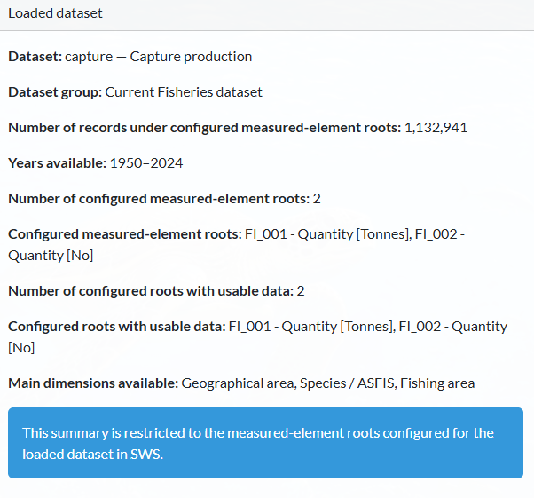
7 Filtering methodology
7.1 General rule
Filters are applied to the loaded dataset before aggregation.
A filter does not directly determine the output grouping. It determines only which source rows remain available to the aggregation procedure.
Filters are applied sequentially:
- year filter;
- measured-element selection;
- geographical-area filter;
- species filter;
- fishing-area filter;
- production-source filter, where available;
- observation-status filter;
- currency filter, where available.
The exact active dimensions depend on the columns present in the loaded dataset.
When no value is selected for a dimension, that dimension does not restrict the dataset.
For example, leaving the geographical-area tree empty keeps all geographical-area codes that remain valid under the dataset configuration.
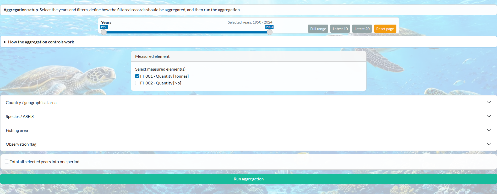
7.2 Year filter
The year slider defines an inclusive range.
For a range from 2015 to 2020, rows are retained when:
\[ 2015 \leq \text{year} \leq 2020. \]
The page also provides shortcuts for:
- full range;
- latest 10 years;
- latest 20 years.
7.3 Measured-element filter
The measured-element selector shows only measured-element roots that satisfy both conditions:
- the root is configured for the dataset in SWS metadata;
- the loaded dataset contains at least one usable row for that root.
The selected measured elements are processed independently during aggregation.
For example, selecting FI_001 and FI_002 produces two separate output tabs rather than summing the two measured elements together.
7.4 Hierarchical filters
The following dimensions use hierarchy trees:
- geographical area;
- species or ASFIS;
- fishing area;
- production source, where available.
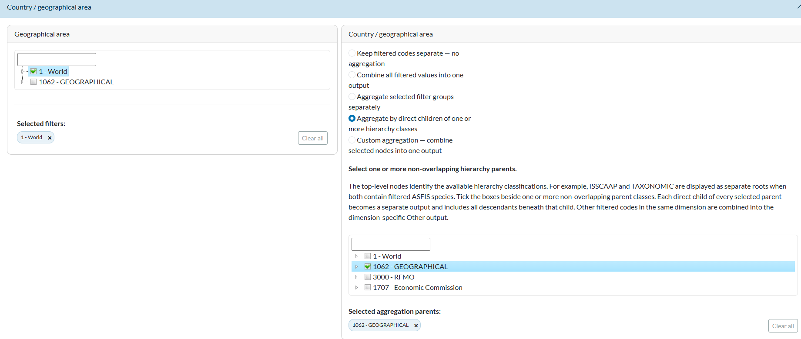
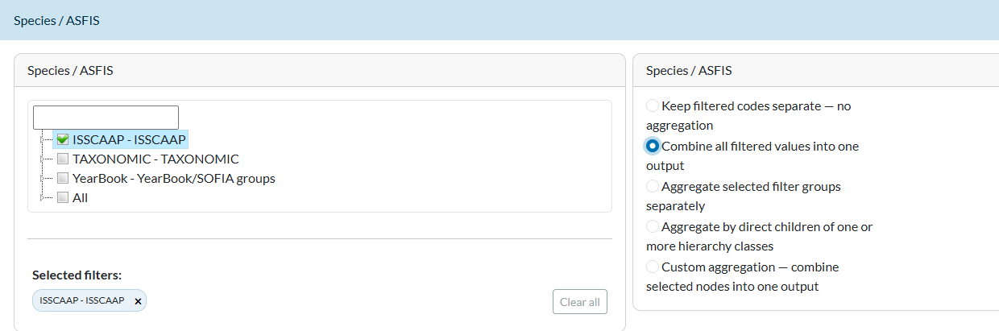
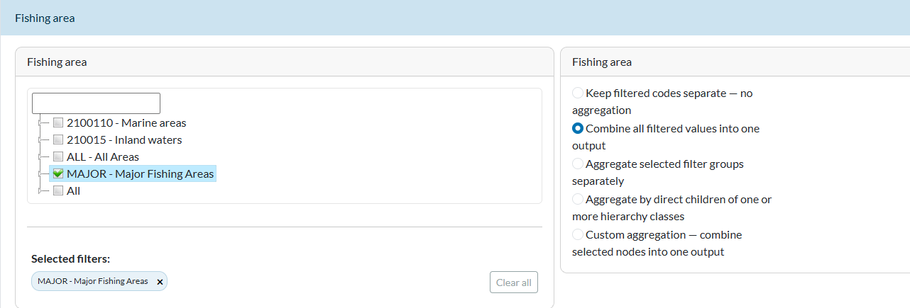
Selecting a hierarchy node includes:
- the selected node itself;
- all descendant codes under that node.
7.4.1 Example
Assume the hierarchy is:
ISSCAAP
├── 1501
│ ├── Species A
│ └── Species B
├── 1502
│ └── Species C
└── 1503
├── Species D
└── Species ESelecting 1501 in the filter retains:
- the code
1501, when it occurs as a data value; - Species A;
- Species B.
It does not retain Species C, D or E unless they are included through another selected filter branch.
7.5 Most-specific filter-selection rule
Hierarchical filters use the most-specific selected nodes as effective filter roots.
When a parent and one or more of its descendants are explicitly selected, the parent is removed from the effective selection and the more specific selections are retained.
7.5.1 Example
| Visible_selection | Effective_filter_roots | Result |
|---|---|---|
| ISSCAAP only | ISSCAAP | All descendants of ISSCAAP remain |
| 1501 only | 1501 | Only the 1501 branch remains |
| ISSCAAP + 1501 + 1502 | 1501 and 1502 | Only the explicitly selected 1501 and 1502 branches remain |
| 1501 + 1502 | 1501 and 1502 | Only the 1501 and 1502 branches remain |
This rule ensures that, when both a parent and one or more of its descendants are selected, the more specific descendant selections determine the effective filter.
7.6 Flat filters
Observation flags and currency flags are treated as flat dimensions.
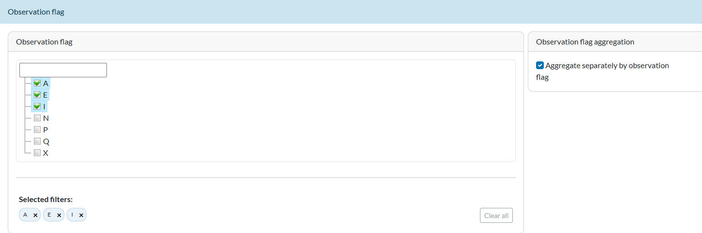
They do not have descendant expansion.
For example, selecting observation flags A and E retains rows whose observation-status flag is exactly A or E.
The Reset page button clears the current filters, aggregation settings and generated results, restoring the page to its initial state.
8 Aggregation methodology
8.1 Aggregation dimensions
The following dimensions can be aggregated independently.
| Dimension | Dataset_column | Other_output |
|---|---|---|
| Country / geographical area | geographicAreaM49_fi | Other filtered geographical areas |
| Species / ASFIS | fisheriesAsfis | Other filtered species |
| Fishing area | fisheriesCatchArea | Other filtered fishing areas |
| Production source / environment type | fisheriesProductionSource | Other filtered production sources |
8.2 Aggregation modes
Each available aggregation dimension has its own independently selected mode.
| Mode | Main_effect | Treatment_of_remaining_filtered_codes |
|---|---|---|
| Keep filtered codes separate | The dimension remains at its filtered raw-code level | They remain separate |
| Combine all filtered values into one output | Every filtered code in the dimension is mapped to one output | They are included in the one combined output |
| Aggregate selected filter groups separately | Each effective hierarchy group selected in the filter becomes an output | They are assigned to the dimension-specific Other output when not mapped |
| Aggregate by direct children | Every direct child of each selected aggregation parent becomes an output | They are assigned to the dimension-specific Other output |
| Custom aggregation | Selected nodes and descendants are combined into one custom output | They are assigned to the dimension-specific Other output |
8.2.1 Mode 1: Keep filtered codes separate
No aggregation map is applied to that dimension.
Every detailed code remaining after filtering stays as a separate value in the result.
Example
After filtering, the remaining species are:
Species A
Species B
Species CWith species set to Keep filtered codes separate, all three species codes remain distinct.
WarningCurrent execution requirement
This option operates at the dimension level. In the current implementation, the Run button still requires at least one aggregation action overall.
When every dimension is set to “Keep filtered codes separate” and neither year aggregation nor observation-flag aggregation is selected, the application stops and asks the user to select at least one aggregation dimension.
8.2.2 Mode 2: Combine all filtered values into one output
All remaining codes for that dimension are combined into one output.
The output code follows this rule:
- when exactly one effective hierarchy node was selected in the corresponding filter, that selected code is retained;
- when no effective filter node or several effective filter nodes were selected, the output code is
TOTAL.
Example A: one selected filter group
Filter: World, code 1
Aggregation mode: Combine all filtered values into one output
Output geographical-area code: 1Example B: several selected filter groups
Filter: Europe and Asia
Aggregation mode: Combine all filtered values into one output
Output geographical-area code: TOTALIllustrative numerical example
Assume that, after filtering, three species groups remain in the dataset:
| Species_group | Value |
|---|---|
| 1501 | 30 |
| 1502 | 40 |
| 1503 | 50 |
If Combine all filtered values into one output is selected for the species dimension, all three filtered values are assigned to the same output group.
The aggregated value is therefore:
\[ 30 + 40 + 50 = 120 \]
| Output_group | Aggregated_value |
|---|---|
| TOTAL | 120 |
The three species groups are therefore replaced by a single TOTAL output with an aggregated value of 120.
8.2.3 Mode 3: Aggregate selected filter groups separately
This mode uses the effective groups selected in the filter tree.
Each effective filter group becomes a separate output and includes all filtered descendants beneath it.
Example A: regional groups
Filter groups: Europe and Asia
Aggregation mode: Aggregate selected filter groups separately
Outputs:
- Europe
- AsiaExample B: ISSCAAP classes
Filter groups: 1501, 1502 and 1503
Aggregation mode: Aggregate selected filter groups separately
Outputs:
- 1501
- 1502
- 1503Example C: ISSCAAP root only
Filter group: ISSCAAP
Aggregation mode: Aggregate selected filter groups separately
Output:
- ISSCAAPThis mode does not automatically split ISSCAAP into its direct children. Splitting by direct children is a separate aggregation mode.
8.2.3.1 Leaf selection
A leaf selected as a filter group works normally in this mode.
Filter group: one species leaf
Aggregation mode: Aggregate selected filter groups separately
Output: that species leafThe mode groups by the selected filter groups themselves; therefore a selected group does not need to have children.
8.2.4 Mode 4: Aggregate by direct children
This mode uses selections made in the independent aggregation-classification tree.
For every selected parent:
- identify its immediate children;
- create one output for each immediate child;
- assign the direct child and all descendants beneath that child to the corresponding output;
- combine filtered codes outside the selected classifications into the dimension-specific
Otheroutput.
ISSCAAP example
Assume:
ISSCAAP
├── 1501 - Freshwater fishes
├── 1502 - Diadromous fishes
└── 1503 - Marine fishesSelecting ISSCAAP as the aggregation parent produces:
1501 - Freshwater fishes
1502 - Diadromous fishes
1503 - Marine fisheswhile selecting TAXONOMIC as the aggregation parent produces:
8501 - Fishes
8502 - Crustaceans
8503 - MolluscsIt does not produce one output called ISSCAAP or TAXONOMIC.
Numerical example
| raw_species | direct_ISSCAAP_child | Value |
|---|---|---|
| Species A | 1501 | 10 |
| Species B | 1501 | 20 |
| Species C | 1502 | 30 |
| Species D | 1503 | 40 |
| Species E | 1503 | 50 |
| direct_ISSCAAP_child | Value |
|---|---|
| 1501 | 30 |
| 1502 | 30 |
| 1503 | 90 |
8.2.4.1 Filtering through one classification and aggregating through another
ASFIS species may be represented under multiple classifications, such as:
- ISSCAAP;
- TAXONOMIC.
The app permits this workflow:
Filter hierarchy: ISSCAAP
Aggregation hierarchy: TAXONOMICExample:
- Filter species belonging to ISSCAAP class
1501. - In the aggregation tree, select a TAXONOMIC parent.
- Aggregate the filtered raw species by the direct children of that TAXONOMIC parent.
The aggregation tree is restricted to classifications containing at least one raw code remaining after filtering.
8.2.4.2 Direct-child parent-selection rule
The direct-child tree treats selected nodes as aggregation parents.
The effective parent selection uses the top, non-overlapping parent nodes.
When selecting ISSCAAP, descendants may appear checked because of the hierarchical tree behaviour, but ISSCAAP remains the effective parent and its direct children become the outputs.
8.2.4.3 Several aggregation parents
Several non-overlapping aggregation parents may be selected.
For example:
Selected parents:
- 1501
- 1502
- 1503The outputs are the direct children of all three selected parents.
The selected parents must not overlap.
8.2.4.4 Parent whose children are leaves
Direct-child aggregation works when the selected parent has children even when those children have no descendants.
Example:
MAJOR
├── Major fishing area A
├── Major fishing area B
└── Major fishing area CSelecting MAJOR produces:
Major fishing area A
Major fishing area B
Major fishing area CThe children do not need to have children of their own.
8.2.4.5 Selecting a leaf as the aggregation parent
A leaf cannot be used as a direct-child aggregation parent because it has no direct children.
Selected aggregation parent: Species A
Result: error — no direct child groupsThis is different from selecting a leaf for Aggregate selected filter groups separately, where the leaf itself remains a valid output.
8.2.4.6 Overlapping direct-child outputs
Aggregation stops when:
- one output child belongs to more than one selected parent;
- one raw code would be assigned to more than one direct-child output;
- the selected classification itself contains overlapping direct-child branches.
This validation prevents double counting.
8.2.5 Mode 5: Custom aggregation
Custom aggregation combines selected nodes and all their descendants into one output.
8.2.5.1 Output naming
- One selected node keeps its original code.
- Several selected nodes within one dimension are combined into a single generated group, labelled
Custom Aggregation 1. If custom aggregation is also applied to other dimensions in the same run, subsequent groups are labelledCustom Aggregation 2,Custom Aggregation 3, and so on. - Every filtered class not included in the custom group is combined into one dimension-specific
Otheroutput.
Example A: one selected node
Selected custom node: 1501
Outputs:
- 1501
- Other filtered speciesThe 1501 output includes:
- 1501 itself, when present as a raw data code;
- every filtered descendant under 1501.
Example B: several selected nodes
Selected custom nodes:
- 1501
- 1502
Outputs:
- Custom Aggregation 1
- Other filtered speciesNumerical example
| output_code | included_groups | aggregated_value |
|---|---|---|
| Custom Aggregation 1 | 1501 + 1502 | 70 |
| Other filtered species | 1503 | 90 |
8.2.5.2 Parent and descendant selected together
When both a parent and one of its descendants are selected for the same custom aggregation, only the parent is used as the effective selection, because the descendant is already included within the parent branch.
If only the descendant is selected, then the descendant itself is used as the custom aggregation group, together with any descendants below it.
When aggregation is applied to several dimensions, the final output reflects the combination of the selected aggregation settings; categories that remain separate in any retained dimension also remain separate in the output.
9 Filtering and aggregation are independent
The filter tree and aggregation tree have different purposes.
| Component | Question_answered | Selection_rule | Expands_descendants |
|---|---|---|---|
| Filter tree | Which filtered records remain? | Most-specific selected filter roots | Yes |
| Aggregation tree | How should the remaining records be grouped? | Top non-overlapping aggregation parents for direct-child mode | Yes, beneath each resulting output group |
9.1 Cross-classification example
Suppose the dataset contains five species.
| species | ISSCAAP | TAXONOMIC_family | Value |
|---|---|---|---|
| Species A | 1501 | Family X | 10 |
| Species B | 1501 | Family Y | 20 |
| Species C | 1501 | Family X | 30 |
| Species D | 1502 | Family Z | 40 |
| Species E | 1502 | Family Z | 50 |
The user can:
- filter through ISSCAAP and retain only
1501; - aggregate through TAXONOMIC;
- obtain
Family XandFamily Youtputs from the filtered records.
| TAXONOMIC_family | Value |
|---|---|
| Family X | 40 |
| Family Y | 20 |
10 Numerical aggregation
10.1 Value calculation
For every output group, the application calculates the numerical value directly from the mapped input records.
The aggregated value for group (g) is:
\[ V_g = \sum_{i \in g} V_i. \]
The aggregated result is rounded to a maximum of four decimal places.
11 Flag aggregation
Numerical values are aggregated according to the selected aggregation rule, while observation flags are aggregated according to the applicable FAO flag rules. The application uses faoswsFlag::aggregateFlagData() to calculate aggregate observation-status and method flags.
The function is called with:
forceMissingAggregateValues = FALSE
includeMissingFlags = TRUEThe observation flag can first be filtered like the other filter dimensions. For example, the user may retain only A records, only E records, or several observation-flag categories.
When Aggregate separately by observation flag is selected, the observation-flag values remaining after filtering are kept separate during aggregation.
For example, if A, E, and N remain after filtering:
A records are aggregated only with A records.
E records are aggregated only with E records.
N records are aggregated only with N records.The observation flag is preserved in the output.
If only A has been retained through the observation-flag filter, then only A records enter the aggregation.
When Aggregate separately by observation flag is not selected, records with different observation flags that remain after filtering may contribute to the same aggregated value, and the resulting aggregate flag is determined according to the FAO flag aggregation rules.
12 Year aggregation
By default, selected years remain separate in the output.
For example, if the selected period is 2015–2020 and the following values belong to the same combination of all other dimensions:
Year Value
2015 10
2016 12
2017 15
2018 11
2019 14
2020 18the output normally keeps six separate yearly records.
When Total all selected years into one period is selected, the years are combined into a single period and their values are aggregated:
Period Value
2015-2020 80because:
\[ 10 + 12 + 15 + 11 + 14 + 18 = 80. \]
The period label 2015-2020 therefore represents the aggregation of all selected years, not simply a relabelling of the individual annual records.
If other dimensions remain different, their records are still kept separate. Year aggregation combines records across the selected years only when they refer to the same species, fishing area, geographical area, production source, measured element, and any other dimensions that remain in the output.
13 Measured-element processing
Measured elements are processed independently.
The workflow is:
- apply year and dimension filters;
- read selected measured elements;
- create one subset per selected measured element;
- run the same aggregation specifications on each subset;
- save one output table per measured element.
Example
Selected measured elements:
- FI_001
- FI_002The Dataset table page contains:
Tab FI_001
Tab FI_002The two elements are not summed together.
When a selected measured element has no rows after filtering, the application creates a warning tab for that measured element instead of terminating all other outputs.
Other selected measured elements may still be processed successfully.
14 Aggregation output tables
The Dataset table page displays one tab per measured element.
Each successful tab contains a table with:
- column-level filtering;
- horizontal scrolling;
- a full-screen option;
- a CSV download button.
The downloaded CSV file is in long format. Each row represents one resulting combination of the dimensions retained in the aggregated output, with the aggregated numerical result reported in the Value column.
A separate CSV file can be downloaded for each measured element.
Warning tabs contain an explanation of why an output could not be created.
15 Graphs
The Graphs page visualizes the results produced by the aggregation.
Graphs are displayed for one measured element at a time. If only one measured element was included in the aggregation, that measured element is shown automatically. If several measured elements were included, the user can select which output to visualize using the Measured element for graphs selector.
The page contains five graphical views:
- Aggregated total;
- Stacked bar chart;
- Relative stacked bar chart;
- Component time series;
- Treemap chart.
For all graphs except Aggregated total, the user also selects how the results should be categorized through the Categorize by selector.
15.1 Aggregated total
The Aggregated total view shows the total aggregated value for each year or aggregated period.
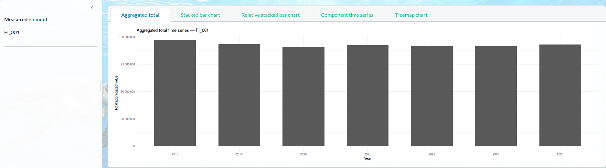
For every year or period displayed on the horizontal axis, the application sums all values in the selected measured-element output.
For example, suppose the selected output contains:
Year Category Value
2020 A 30
2020 B 20
2020 C 50
2021 A 40
2021 B 25
2021 C 55The graph displays:
2020 100
2021 120because:
\[ 30 + 20 + 50 = 100 \]
and:
\[ 40 + 25 + 55 = 120. \]
The graph therefore shows the overall total for the selected measured element rather than its composition by individual categories. The current implementation displays these totals as bars. If Total all selected years into one period was selected during aggregation, the aggregated period label, for example 2015-2020, is displayed instead of separate annual values.
15.2 Categorize by
The remaining four graphs require the user to choose a category through the Categorize by selector.
Depending on the aggregation that was performed, the selector can contain two types of choices:
- Aggregation composition;
- Final result column.
15.2.1 Aggregation composition
An Aggregation composition option is available for dimensions that were aggregated.
For example, if species were aggregated using Aggregate by direct children of ISSCAAP, the graph can show the contribution of the resulting ISSCAAP groups.
The application uses the aggregation rule that produced the result to determine which records belong to each aggregation group. The graph then calculates the total value of each group for every year or period. For example:
Year ISSCAAP group Value
2020 1501 40
2020 1502 60
2021 1501 45
2021 1502 75can be displayed as two components, 1501 and 1502, in the stacked bar chart, relative stacked bar chart, component time series, or treemap.
15.2.2 Final result column
A Final result column uses one of the dimensions that remains in the final aggregated dataset.
This option categorizes the graph using a dimension that was not aggregated and therefore remains separate in the final output. Possible examples include:
- geographical area;
- species;
- fishing area;
- observation flag;
- production source;
- currency flag, where available.
Only columns containing at least two categories in the selected output are offered as categorization choices.
A dimension that has already been aggregated is not offered again as a Final result column. Instead, its composition can be examined through the corresponding Aggregation composition option.
15.3 Stacked bar chart
The Stacked bar chart shows the absolute value for each year or period, divided into the categories selected under Categorize by.
For example:
Year Category Value
2020 A 30
2020 B 70
2021 A 40
2021 B 80produces one bar for 2020 and one bar for 2021.
The 2020 bar has a total height of 100, divided into:
A = 30
B = 70The 2021 bar has a total height of 120, divided into:
A = 40
B = 80The height of each complete bar therefore represents the total value for that year or period, while the coloured sections show how the selected categories contribute to that total.
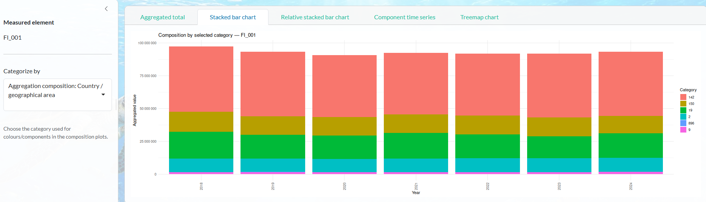
15.4 Relative stacked bar chart
The Relative stacked bar chart shows the same composition as the stacked bar chart, but expresses each category as a percentage of the total for that year or period rather than as an absolute value.
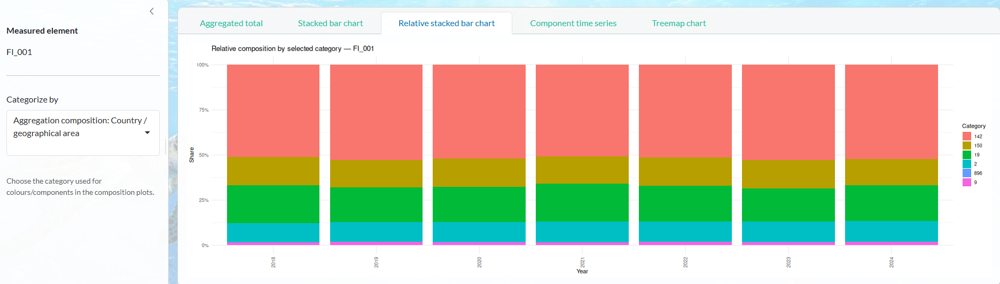
For a year or period (t) and category (c), the share is calculated as:
\[ s_{ct} = \frac{V_{ct}} {\sum_c V_{ct}}. \]
For example, if the values in 2020 are:
Category A = 30
Category B = 70the total is:
\[ 30 + 70 = 100. \]
The relative stacked bar therefore displays:
Category A = 30%
Category B = 70%If in 2021 the values are:
Category A = 40
Category B = 80the total is 120, so the shares are approximately:
Category A = 33.3%
Category B = 66.7%Each complete bar represents 100%, which makes it possible to compare changes in composition over time even when the absolute totals differ substantially between years.
15.5 Component time series
The Component time series shows the evolution of each selected category over time.
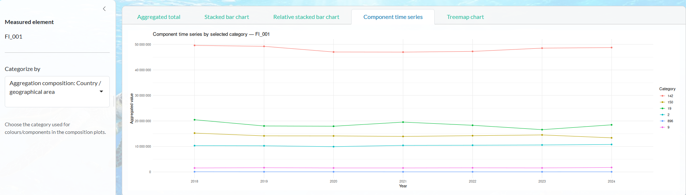
A separate line is drawn for every category selected through Categorize by, with points showing the value for each year or period.
For example:
Year Category A Category B
2020 30 70
2021 40 80
2022 55 75produces one line for Category A and another for Category B.
This view is useful for examining how the individual components change over time rather than looking only at the overall total.
Depending on the selected categorization, the lines may represent, for example:
- geographical groups;
- species groups;
- fishing areas;
- production sources;
- observation-flag categories;
- currency-flag categories;
- another dimension remaining in the aggregated output.
15.6 Treemap
The Treemap chart shows the composition of the selected measured-element output for one year or aggregated period at a time.
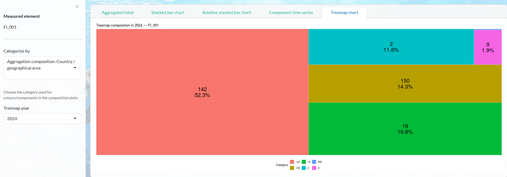
The user selects the year or period using the Treemap year selector. By default, the most recent available year or period is selected.
Each rectangle represents one category from the selected Categorize by option.
The area of each rectangle is proportional to the total value of that category.
For example, if the selected period contains:
Category A 50
Category B 30
Category C 20the treemap represents:
Category A 50%
Category B 30%
Category C 20%The label displayed inside each tile contains:
- the category;
- its percentage share of the total.
Only categories with a positive, nonmissing total value are included in the treemap.
The treemap therefore provides a compact view of the relative importance of the different categories for one specific year or aggregated period.
16 Dataset comparison
16.1 Eligibility and required sequence
Comparison is available only when the main loaded dataset is a current Fisheries dataset.
A comparison source may be:
- a disseminated dataset;
- a tagged version associated with a base Fisheries dataset.
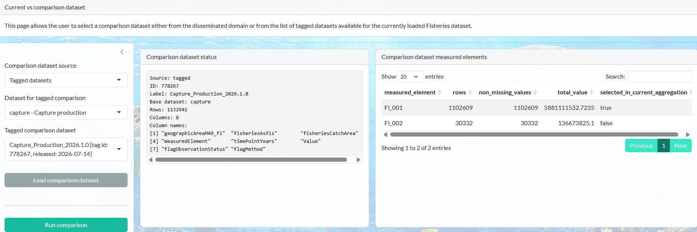
The intended workflow is:
- load a current dataset;
- select filters;
- run aggregation;
- open the Comparison page;
- load a disseminated or tagged comparison dataset;
- review compatibility warnings;
- run comparison.
16.2 Reuse of the aggregation state
The application stores:
- filtered input used for the current aggregation;
- selected measured elements;
- aggregation specifications;
- year-aggregation choice;
- observation-flag grouping choice;
- filter state.
The comparison dataset is processed using the same analytical setup.
Aggregation maps are rebuilt against the filtered comparison data so that the comparison follows the same requested hierarchy logic while accounting for codes present in the comparison source.
16.3 Matching records for comparison
To compare the current and comparison datasets, the application first identifies records that refer to the same combination of analytical dimensions.
Only dimensions available in both the current and comparison results are used.
For example, a current value for a particular year, geographical area, species and fishing area is compared with the value from the comparison dataset referring to the same combination of these categories.
If one of the relevant categories differs, the records are not treated as the same observation for comparison.
Observation flags are not used to match records because the current and comparison datasets may use different flag classifications.
16.4 Comparison values
For every matched analytical combination, the output contains:
current_value;comparison_value;absolute_difference;percentage_difference;comparison_status.
The absolute difference is:
\[ D = V_{\text{current}} - V_{\text{comparison}}. \]
The percentage difference is:
\[ P = 100 \frac{ V_{\text{current}} - V_{\text{comparison}} }{ V_{\text{comparison}} }. \]
It is calculated only when the comparison value is nonzero.
16.5 Comparison statuses
Show R code
comparison_statuses <- data.frame(
Status = c(
"Same value",
"Different value",
"Only in current output",
"Only in comparison output"
),
Meaning = c(
"Both rows exist and their rounded values are equal",
"Both rows exist but their values differ",
"The analytical combination exists only in the current result",
"The analytical combination exists only in the comparison result"
)
)
knitr::kable(comparison_statuses)| Status | Meaning |
|---|---|
| Same value | Both rows exist and their rounded values are equal |
| Different value | Both rows exist but their values differ |
| Only in current output | The analytical combination exists only in the current result |
| Only in comparison output | The analytical combination exists only in the comparison result |
Numerical example
Show R code
comparison_example <- data.frame(
group = c("1501", "1502", "1503", "1504"),
current_value = c(120, 80, 50, 40),
comparison_value = c(100, 80, NA, 60)
)
comparison_example$absolute_difference <- with(
comparison_example,
current_value - comparison_value
)
comparison_example$percentage_difference <- with(
comparison_example,
100 * absolute_difference / comparison_value
)
comparison_example$status <- c(
"Different value",
"Same value",
"Only in current output",
"Different value"
)
knitr::kable(comparison_example)| group | current_value | comparison_value | absolute_difference | percentage_difference | status |
|---|---|---|---|---|---|
| 1501 | 120 | 100 | 20 | 20.00 | Different value |
| 1502 | 80 | 80 | 0 | 0.00 | Same value |
| 1503 | 50 | NA | NA | NA | Only in current output |
| 1504 | 40 | 60 | -20 | -33.33 | Different value |
16.6 Differences in category coverage
After applying the filters, the application checks whether the current and comparison datasets contain the same categories for the dimensions that were aggregated.
For example, suppose the species categories remaining in the two datasets are:
Current dataset: 1501, 1502
Comparison dataset: 1501, 1503In this case:
1501is present in both datasets;1502is present only in the current dataset;1503is present only in the comparison dataset.
The application displays a warning identifying these differences. It also indicates how many of the categories found only in one dataset have at least one non-missing numerical value.
This helps the user identify situations in which the two datasets do not have exactly the same category coverage after filtering.
The warning does not stop the comparison. The same filters and aggregation rules are still applied, and the comparison continues.
16.7 Comparison outputs
Two views are available:
- All comparison rows
- Differences only
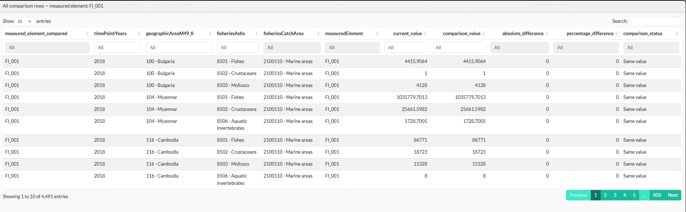
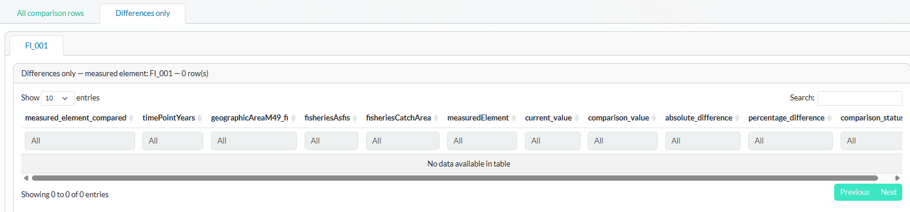
Each measured element has its own comparison tab and CSV download.
17 Outlier analysis
The Outlier analysis page provides tools for examining unusually large aggregated values and unusually large changes over time.
The analysis is based on the aggregation output produced on the Filters & Aggregation page. It does not operate directly on the original loaded dataset. Therefore, an aggregation must first be run before the outlier analysis can be used.
The page contains two views:
- Distribution by year;
- Largest / strongest records.
The same selections made in the sidebar are applied to both views.
17.1 Measured element for outlier analysis
Outlier analysis is performed for one measured element at a time.
If the aggregation produced only one measured-element output, that measured element is used automatically.
If several measured elements were aggregated, the Measured element for outlier analysis selector allows the user to choose which output to examine.
For example, if separate aggregation outputs were produced for quantity and value, the outlier analysis is performed on only one of these outputs at a time.
17.2 Analyse outliers for
The Analyse outliers for selector determines whether the analysis is carried out on the entire selected aggregation output or restricted to one particular group.
The default option is:
Full selected aggregation outputIn this case, all records from the selected measured-element output are included in the analysis.
The selector can also contain columns available in the selected aggregation output, for example:
geographicAreaM49_fi;fisheriesAsfis;fisheriesCatchArea;measuredElement;flagObservationStatus;fisheriesProductionSource, where available;flagCurrency, where available.
The available choices depend on the structure of the selected dataset and on the aggregation that was performed. When one of these columns is selected, an additional Selected group value selector appears. This allows the analysis to be restricted to one specific category from that column.
For example:
Analyse outliers for: fisheriesAsfis
Selected group value: 1501restricts the analysis to records belonging to species group 1501.
Similarly:
Analyse outliers for: geographicAreaM49_fi
Selected group value: 380restricts the analysis to the selected geographical category.
This option is useful when values from very different groups should not be examined together. For example, instead of comparing the distribution across all geographical areas, the user can examine the observations belonging to one geographical area only.
17.3 Outlier metric
The Outlier metric selector determines which quantity is examined.
The Value metric is always available.
When the selected measured-element output contains at least two periods, two additional metrics are available:
- Year-on-year absolute change;
- Year-on-year percentage change.
There is no test that the periods are consecutive. So if a series has:
2018
2019
2022the 2022 change will be calculated against 2019 and called year-on-year, even though it is a three-year gap.
If the aggregation has combined all selected years into a single period, the change metrics are not available because there is no earlier period with which to calculate a change.
17.3.1 Value
With Value selected, the analysis uses the aggregated Value directly.
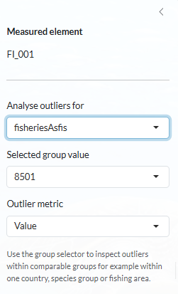
For example, suppose the selected aggregation output contains:
Year Geographical area Species Value
2020 380 1501 120
2020 250 1501 80
2020 724 1501 200The values analysed are 120, 80 and 200.
A large value is not automatically treated as an error. It may simply correspond to a genuinely large geographical area, species group, fishing area or other category.
The Value metric should therefore be interpreted as a screening tool for identifying records that may deserve further examination.
17.3.2 Year-on-year absolute change
The Year-on-year absolute change metric examines how much a value changes from the previous available period for the same series.
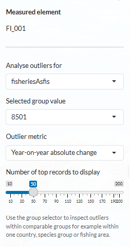
It is calculated as:
\[ \Delta_t = V_t - V_{\mathrm{prev}}. \]
For example, suppose the same geographical area, species and fishing area has:
Year Value
2020 100
2021 135The absolute change for 2021 is:
\[ 135 - 100 = 35. \]
A positive value represents an increase and a negative value represents a decrease.
For example:
2020 100
2021 70produces:
\[ 70 - 100 = -30. \]
The first available period for each series has no previous value and therefore cannot have an absolute-change value.
The resulting change is expressed in the same unit as the selected measured element. For example, if the measured element is expressed in tonnes, the absolute change is also expressed in tonnes.
17.3.3 Year-on-year percentage change
The Year-on-year percentage change metric expresses the change relative to the magnitude of the previous available value.
It is calculated as:
\[ \%\Delta_t = 100 \times \frac{V_t - V_{\mathrm{prev}}} {|V_{\mathrm{prev}}|}. \]
For example:
Previous value: 100
Current value: 150gives:
\[ 100 \times \frac{150 - 100}{100} = 50\%. \]
A decrease from 100 to 70 gives:
\[ 100 \times \frac{70 - 100}{100} = -30\%. \]
The percentage change is not calculated when the previous value is zero, because division by zero is not possible.
Percentage changes should also be interpreted carefully when the previous value is very small. For example, an increase from 1 to 10 produces a very large percentage change even though the absolute change is only 9.
17.4 Distribution by year
The Distribution by year tab provides a graphical view of the selected metric across the available years or periods.
For every year or period, the graph displays:
- a boxplot summarizing the distribution;
- the individual records as jittered points.
The horizontal axis represents the year or period and the vertical axis represents the selected outlier metric.
When Value is selected, each point represents the aggregated value of one record in the selected aggregation output.
For example, if the selected output contains many combinations of geographical areas, species and fishing areas for 2020, their values appear as individual points in the 2020 distribution.
When Year-on-year absolute change is selected, each point represents the change from the previous available period.
When Year-on-year percentage change is selected, each point represents the corresponding percentage change.
The boxplot provides a summary of the distribution and helps identify values that are far from the majority of records. However, the application does not automatically classify these observations as errors or invalid data.
The plot therefore supports exploratory screening rather than automatic outlier detection.
If the analysis has been restricted using Analyse outliers for and Selected group value, the distribution is calculated only for that selected group.
The plot can also be opened using the full-screen option.
17.5 Largest / strongest records
The Largest / strongest records tab provides a table of the observations with the largest values or strongest changes.
The way records are ranked depends on the selected metric.
17.5.1 Value
When Value is selected, records are ordered from the highest aggregated value to the lowest.
For example:
Value
500
350
220
100would be displayed starting with 500.
This view helps identify which combinations of year, geographical area, species, fishing area and other dimensions generate the largest aggregated values.
17.5.2 Year-on-year absolute change
When Year-on-year absolute change is selected, records are ordered according to the absolute magnitude of the change.
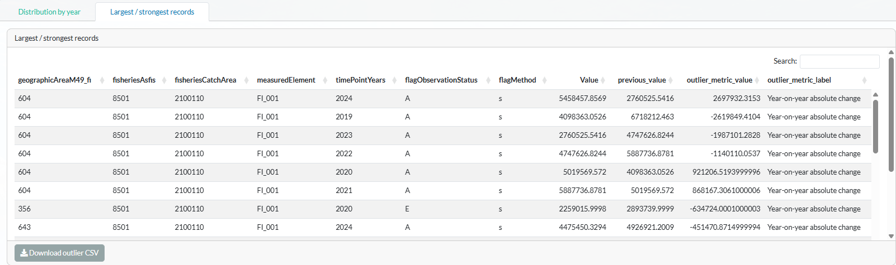
This means that both large increases and large decreases can appear at the top of the table.
For example:
Change
+500
-450
+300
-250is ranked according to the size of the change, regardless of its direction.
The table includes the current Value, the previous_value used for the calculation and the calculated change.
17.5.3 Year-on-year percentage change
The same ranking principle is used for Year-on-year percentage change.
For example:
Percentage change
+250%
-200%
+150%
-120%is ordered according to the absolute size of the percentage change.
Both unusually large increases and unusually large decreases are therefore highlighted.
The current Value and the previous_value are retained in the table so that the percentage change can be interpreted together with the underlying numerical values.
This is particularly important when very large percentages are generated by a small previous value.
17.6 Number of top records to display
The Number of top records to display control appears when the Largest / strongest records tab is selected. The user can choose to display between 10 and 200 records, in increments of 10. The default is 50 records.
For the Value metric, these are the records with the largest values.
For the two change metrics, these are the records with the largest absolute changes, regardless of whether the change is positive or negative.
17.7 Download outlier CSV
The table shown in the Largest / strongest records tab can be downloaded using the Download outlier CSV button.
The downloaded CSV corresponds to:
- the selected measured element;
- the selected analysis group, if one was specified;
- the selected outlier metric;
- the selected number of top records.
The downloaded table contains the same relevant analytical columns used to identify the records displayed in the application. For change metrics, it also contains the previous value and the calculated change information required to interpret the result.
18 Worked user scenarios
The following examples illustrate some typical ways in which filtering and aggregation can be combined in the application.
18.1 Scenario 1: Filter one ISSCAAP group, keep species separate and aggregate geographical areas
Objective: restrict the data to species belonging to one ISSCAAP group, keep the individual species separate, and combine the selected geographical areas into one output.
Procedure:
- Select the required years and measured element.
- Select the required geographical areas in the geographical-area filter.
- Set Geographical area aggregation to Combine all filtered values into one output.
- In the species filter, select ISSCAAP group
1501. - Set Species aggregation to Keep filtered codes separate.
- Run the aggregation.
Selecting 1501 in the species filter retains the species belonging to that ISSCAAP branch.
Because Keep filtered codes separate is selected for species, the individual species remain separate in the output. For example, if the filtered branch contains:
Species A
Species B
Species Cthese species remain separate rather than being combined into a single 1501 result.
At the same time, the selected geographical areas are combined according to the geographical-area aggregation setting.
The final output therefore contains separate results for the individual species within 1501, while the selected geographical areas are aggregated.
18.2 Scenario 2: Aggregate species by the direct ISSCAAP groups
Objective: produce separate aggregated results for the direct groups under ISSCAAP.
Procedure:
- Filter the species broadly enough to include the species required for the analysis.
- Set Species aggregation to Aggregate by direct children.
- In the aggregation hierarchy, select
ISSCAAP. - Run the aggregation.
If the hierarchy is:
ISSCAAP
├── 1501
├── 1502
└── 1503the result contains separate outputs for:
1501
1502
1503Each output includes the species belonging to that direct-child branch.
The application therefore does not create one single ISSCAAP total. Instead, the selected parent determines the level immediately below it that is used for the aggregation.
18.3 Scenario 3: Filter species using ISSCAAP and aggregate them using TAXONOMIC
Objective: select species through one classification and summarize the selected species through another classification.
Suppose the user first restricts the data to species belonging to ISSCAAP group 1501, but then wants to examine those species according to their taxonomic groups.
Procedure:
- In the species filter, select ISSCAAP group
1501. - Set Species aggregation to Aggregate by direct children.
- In the aggregation hierarchy, open
TAXONOMIC. - Select the required taxonomic parent.
- Run the aggregation.
For example, assume the filtered data contain:
Species A ISSCAAP 1501 Family X 10
Species B ISSCAAP 1501 Family Y 20
Species C ISSCAAP 1501 Family X 30
Species D ISSCAAP 1502 Family Z 40Because the filter selected only ISSCAAP 1501, Species D is excluded.
If the aggregation is then performed by taxonomic family, the result is:
Family X 40
Family Y 20This illustrates that the hierarchy used for filtering does not have to be the same hierarchy used for aggregation.
18.4 Scenario 4: Apply different aggregation rules to several dimensions
Objective: combine several aggregation settings in the same run.
Suppose the user wants to:
- combine the selected geographical areas into one geographical result;
- aggregate species by the direct children of
ISSCAAP; - keep fishing areas separate;
- combine all selected years into one period.
The settings could be:
Geographical area:
Combine all filtered values into one output
Species:
Aggregate by direct children
Selected parent: ISSCAAP
Fishing area:
Keep filtered codes separate
Years:
Total all selected years into one periodIf the selected years are 2015–2020, the final output contains the period:
2015-2020Within that period, separate rows are produced for each resulting combination of:
- the geographical-area aggregation output;
- the direct ISSCAAP child;
- the fishing area retained separately;
- the measured element;
- any other dimensions that remain separate.
For example:
Period Geographical output Species group Fishing area Value
2015-2020 TOTAL 1501 Area 27 ...
2015-2020 TOTAL 1501 Area 37 ...
2015-2020 TOTAL 1502 Area 27 ...
2015-2020 TOTAL 1502 Area 37 ...This scenario shows how the final result is determined by the combination of all aggregation settings, rather than by one dimension at a time.
19 Validation and error handling
Before and during aggregation, the application performs a number of checks to prevent incomplete or ambiguous results.
19.1 Dataset and aggregation checks
The application checks that:
- a dataset has been loaded and selected;
- the dataset contains the columns required for the selected operation;
- at least one measured element has been selected;
- records remain after applying the selected year range and filters;
- at least one aggregation operation has been selected, either for an aggregation dimension, for the selected years, or separately by observation flag.
If no records remain after filtering, the aggregation is not run.
If a selected measured element has no records after applying the year range and dimension filters, no aggregation is produced for that measured element and a warning is shown instead.
19.2 Hierarchy and aggregation checks
For hierarchy-based aggregation, the application checks that:
- the required hierarchy selection has been made;
- a parent selected for Aggregate by direct children has direct child groups;
- selected hierarchy parents do not produce overlapping aggregation groups;
- the same filtered category is not assigned to more than one output group;
- every filtered category is assigned to an aggregation output;
- for Custom aggregation, at least one selected hierarchy node corresponds to categories present in the filtered data.
If any of these conditions would make the aggregation ambiguous or cause filtered records to be omitted, the aggregation is stopped and an error message is displayed.
19.3 Aggregation error diagnostics
When an error occurs during aggregation, the application adds information identifying the aggregation setting in which the error occurred.
Depending on the operation, the error message may include:
- the aggregation dimension, such as Species / ASFIS or Fishing area;
- the corresponding dataset column;
- the codelist used for the hierarchy;
- the category or categories selected for aggregation;
- the stage of the aggregation process in which the error occurred;
- the specific error that caused the aggregation to stop.
For example, if an error occurs while creating direct-child groups for a selected species hierarchy, the message identifies the species aggregation and the selected hierarchy parent before reporting the specific problem.
This additional information is intended mainly for debugging and maintenance, as it makes it possible to identify which aggregation setting caused the failure.
19.4 Per-measured-element warnings
An error affecting one measured element may produce a warning tab for that element while other measured elements continue processing.
20 Current implementation constraints
WarningQuantity, value and price currently use the same summation logic
The current implementation aggregates the Value column by summation for quantity, value and price datasets.
A quantity-weighted average for unit-price datasets is not currently applied.
Price-output interpretation must therefore account for this implementation rule.
WarningFilter-only execution
The current Run handler requires at least one aggregation specification, year aggregation or observation-flag aggregation.
A run in which every dimension is set to Keep filtered codes separate, with no other aggregation option selected, is currently rejected.
NoteComparison direction
A current dataset must be the main dataset.
A disseminated or tagged dataset is used as the comparison side.
NoteDirect-child overlap
When hierarchy definitions assign one code to more than one direct child, the application stops rather than duplicating and double-counting the record.
21 Main functions in the application
| Function | Responsibility |
|---|---|
| normalise_and_drop_empty_values() | Standardize the Value column, convert it to numeric and remove rows without a valid numerical value |
| validate_dataset_columns() | Check that the dataset contains the required columns and identify missing optional columns |
| get_selected_codes_from_tree() | Interpret tree selections, apply the hierarchy selection rule and, where required, include descendants |
| get_current_filtered_data() | Apply the active year and dimension filters to the selected dataset |
| build_selected_groups_map_with_remainder() | Create separate outputs for the selected filter groups and assign the remaining categories to Other |
| build_classification_map_with_remainder() | Create outputs for the direct children of the selected hierarchy parents and assign the remaining categories to Other |
| build_custom_map_with_remainder() | Create one custom aggregation output and assign the remaining categories to Other |
| aggregate_by_codelist() | Aggregate one dimension by summing values according to the aggregation mapping and calculating aggregate flags |
| aggregate_by_multiple_dimensions() | Apply the selected aggregation settings across dimensions and optionally aggregate years or preserve observation-flag groups |
| build_comparison_result_table() | Match current and comparison results, calculate differences and assign comparison statuses |
| prepare_outlier_data() | Prepare Value, absolute-change or percentage-change metrics for outlier analysis |
22 Maintenance guidance, trigger link and repository
The documentation should be revised whenever any of the following changes:
DATASET_CONFIG;- common dataset columns;
- aggregation dimensions;
- filter dimensions;
- hierarchy-root treatment;
- aggregation-mode semantics;
- flag-aggregation rules;
- comparison formulas;
- outlier formulas;
- graph types;
- output download structure;
- page navigation.
A recommended version-control workflow is:
- update the Shiny code;
- test the modified behaviour;
- revise this
.qmddocument; - render the HTML documentation;
- review the rendered document;
- commit both source code and documentation source;
- publish or share the rendered HTML where appropriate.
The trigger link for this Shiny Application:
Open the Shiny Application
The GitHub repository:
Open the GitHub repository
23 Conclusion
The Fisheries Aggregation Shiny App provides a flexible workflow for selecting, aggregating, comparing and analysing Fisheries data.
A key feature of the application is the separation between filtering and aggregation. Filters determine which data are included in the analysis, while aggregation settings determine how the selected data are grouped in the final output. This makes it possible, for example, to select data through one hierarchy and aggregate them through another.
Hierarchical filters and aggregation rules can be applied independently across several dimensions, including geographical area, species, fishing area and production source. Measured elements are processed separately, while year and observation-flag aggregation can be applied when required.
The resulting aggregated outputs can then be explored through tables and graphs, compared with alternative dataset versions, and examined through the outlier-analysis tools.
Overall, the application is designed to provide a consistent and transparent way to move from detailed Fisheries data to user-defined aggregated results while preserving the structure needed for subsequent analysis and comparison.